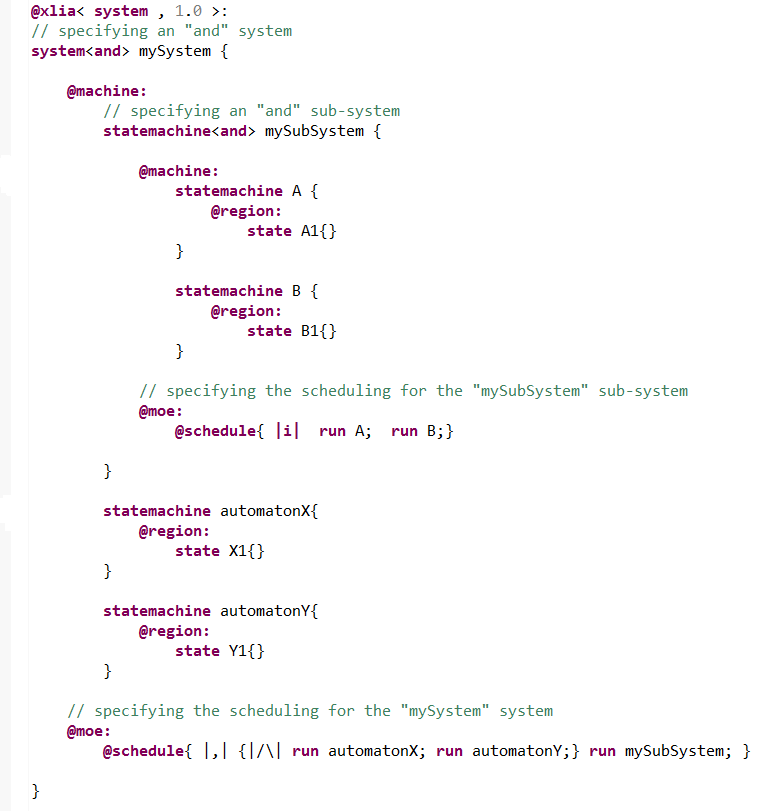

For every composite machine (with several sub-components in the "@machine:" section), we can specify the nature of the concurrency for the evaluation of the sub-components.
For instance, if we consider the system defined in the most basic example : the system has 2 statemachines A and B. When the engine takes one step. Can the two statemachines simultaneously change their state ? Must there be interactions between the statemachines during the step ? If the fact that statemachine A goes from state A1 to state A2 can alter the ability of statemachine B to go from state B1 to state B2, the execution will be different if we give the priority to statemachine A and if we give the priority to statemachine B.
The notion of MOC can answer all of those questions and issues. In diversity, when running several processes (a statemachine can be considered to be a process; an instruction block can also be considered to be a process ...) that share a same depth level and that could run in parallel, we can use the notion of MOC to fine tune the order of execution of the processes and their interactions.
We must specify the MOC of the parent machine to specify how it's children can be executed in parallel.
In our example, we would specify the MOC of the parent system that contains A and B.
Specifying a general MOC can be done when declaring a machine (just after the type : "[type] <moc > machineID" : see machine).
The possibilities for the "moc" modifier are :
By default, the moc will be "or".
The "moc" has absolutely no effect one machines that aren't composite (atomic machines) because those don't have more than one sub-components.
The "xor" and "or" mocs are rather straightforward because nothing can run in parallel. On the other hand, the "and" moc involves the possibility that the submachines evolve in parallel.
Diversity simulates this parallelism by alternatively taking one step (if possible) in one machine, then one step in another machine. Furthermore this step can be taken from the initial context or from a context derived from the execution of the other machine.
When working with a greater number of machines, this can generate a lot of possible alternatives for a single step.
The way in which the submachines are evaluated (which means we take one step on those) is therefore important. We call it the "scheduling".
In the documentation, there is a part dedicated to the description of the "scheduling" also called "order operators" or "models of computation". You can find it here.
For a given "and" machine, we can configure the type of scheduling in the "@schedule{...}" action primitive which is inside the "@moe:"section as seen below :
